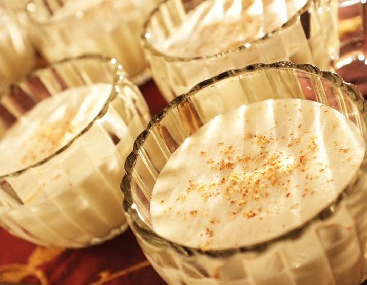

Alton Brown's Aged Eggnog

Ingredients
- 12 large eggs
- 1 pound sugar
- 1 teaspoon nutmeg
- 1 pint half-and-half
- 1 pint whole milk
- 1 pint heavy cream
- 1 cup rum
- 1 cup cognac
- 1 cup bourbon
- 1/4 teaspoon salt
Directions
- Separate the eggs and store the whites.
- Beat the yolks with sugar and nutmeg.
- Combine dairy, booze, and salt then slowly beat into egg mixture
- Move into jar and store in the fridge for a minimum of 2 weeks.
- Serve chilled with extra nutmeg grated on top.